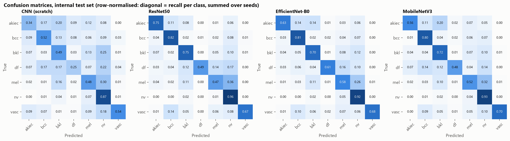

See how four models read a skin lesion
Upload a dermoscopy photo. Four models classify it side by side, and you get clear advice on what to do next.
Photos are never saved. Each one is checked in this computer's memory and discarded straight after. Nothing is stored in a database or sent over the internet.
An ordinary mole. All four models agree.
Usually no treatment needed
- Check it once a month with the ABCDE rule.
- Take a photo now so you can compare it later.
- Use sunscreen and avoid sunburn.
We keep only your username and a hashed password, never your photos. The account exists on this computer only.
How it works
- Sign inA free local account keeps the tool to people you let use this computer.
- Add a photoA close-up dermoscopy image, lesion in the centre. Or use one of the samples.
- Compare and know what to doEach model gives its top guess, and you get clear next steps: self-care, a check-up, or seeing a doctor soon.
The model comparison and testing method are open to everyone, no account needed.
Not saved, not shared. The photo is only held in memory while the models look at it.
Samples, one per lesion type
Test-set photos the models never trained on, picked from ones most models get right.
A student project, not a medical diagnosis. Anyone worried about a skin lesion should see a doctor.
Which model is best?
Scored on 2,004 HAM10000 photos held out by lesion, and on 1,511 photos from the separate ISIC 2018 test set.
Bold marks the best value in each column. Macro F1 is the main score because it weighs all 7 lesion types equally. Plain accuracy misleads here: 67% of the photos are ordinary moles, so a model that always answers "mole" scores 67% while missing every cancer.





How it was tested
Every model saw the same data and the same training recipe. Only the architecture changed.
Split by lesion, not by photo
HAM10000 has 10,015 photos of only 7,470 lesions. A random split puts photos of the same lesion in training and in testing. Here, every lesion sits in exactly one of train (70%), validation (10%) or test (20%).
An outside test set
Models are also scored on the official ISIC 2018 test images, collected separately. Good scores there mean the models learned skin lesions, not quirks of one dataset.
Imbalance handled
A class-weighted loss makes the rare cancers count more, and the best checkpoint is picked by macro F1 instead of accuracy.
Same recipe for all
224 by 224 input, rotation, flip, zoom and colour augmentation, the AdamW optimiser, a cosine schedule and 30 epochs. The pretrained models start from ImageNet weights; the baseline CNN starts from scratch.
Repeated runs
Each model was trained several times with different random seeds. The tables show the mean and spread, so one lucky run can't decide the winner.
Speed and size
Parameters, file size and CPU time per photo were measured too, because the best model for a phone is not always the most accurate one.
Your privacy
Skin photos are personal, so this app is built to forget them.
Photos are never saved
A photo is held in memory only while the four models look at it, well under a second, and is then discarded. It is never written to disk.
No photos in the database
The database holds only usernames, hashed passwords and login sessions. It has no place for images, and automated tests check that none get in.
Nothing leaves this computer
The models run here. No cloud service, no API, no tracking. The website only accepts connections from this computer.
You stay in control
Remove clears a photo from the screen. You can sign out at any time, or delete your account below.
Delete your account
Removes your username, password and sessions from this computer for good.